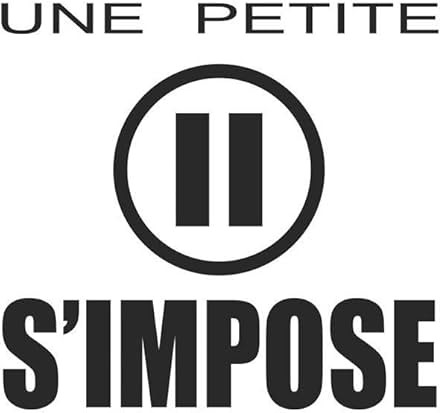

| Entreprise | Dates | Mission |
|---|---|---|
| Les portes logiques | Janvier-mi Février 2025 (5 semaines) |
J'ai effectué la refonte complète du site web de l’association. J'ai numérisé leur base de données adhérents sur le logiciel Dolibarr tout en le
configurant entièrement pour leur besoin envers leurs fournisseurs. J'ai aussi participé en partie à la fabrication de l’interface d’une borne d’arcade pour leur
projet BiohackLab. |
| Wizz Itech | Juin 2024 (5 semaines) |
J'ai réparer plusieur sorte de matériel informatique : PC fixes, ordinateurs portables, téléphones, consoles. |
| Entreprise | Dates | Mission |
|---|---|---|
| Intermarché | Été 2025 (3 mois) | je devais faire la mise en rayon des produits qui arrivaient pour les rayons frais, mais aussi faire l'inventaire des stocks chaque premier du mois. |
| Cariou | Août 2024 (1 mois) | Je devais retourner des poches d’huîtres dans l'eau. |
| co-production de téléfilm | Décembre 2023 (1 semaine) | J'ai été figurant dans le téléfilm << Le chant des sirènes >> |
| Mairie de Plonéour Lanvern | Été 2022 (4 semaines) | Dans le cadre d'un projet de la mairie a l'intention des jeunes, j'ai été serveur au restaurant municipal puis plongeur à l’Ehpad Pierre Goenvic |